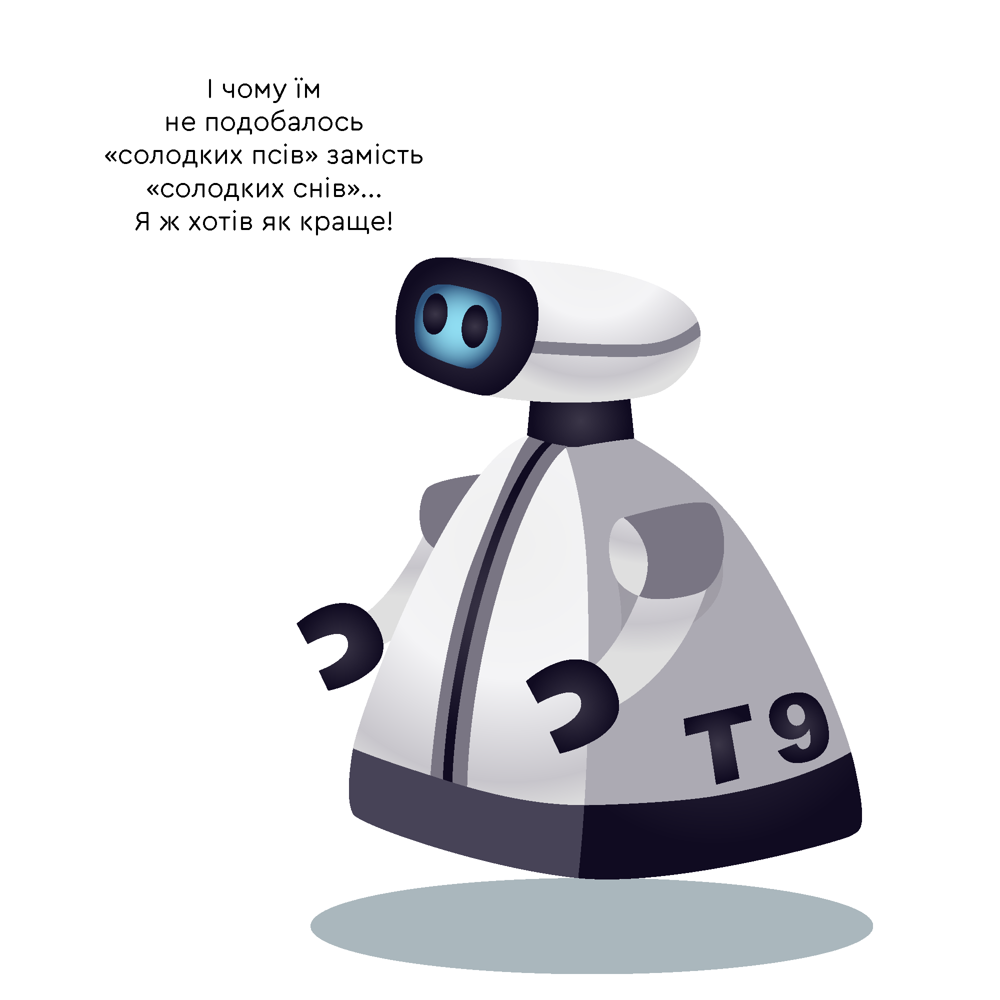
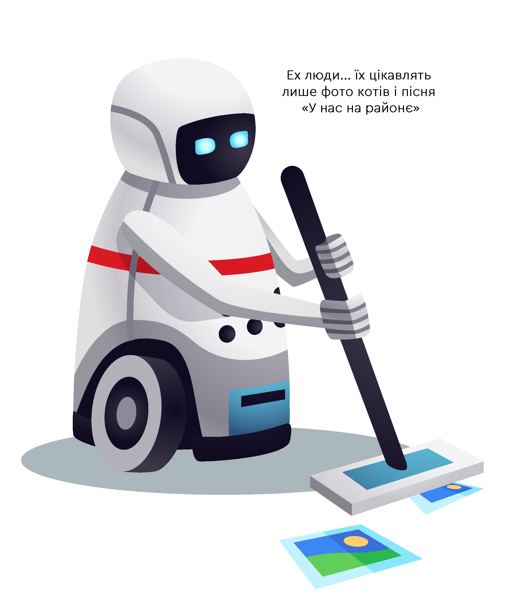
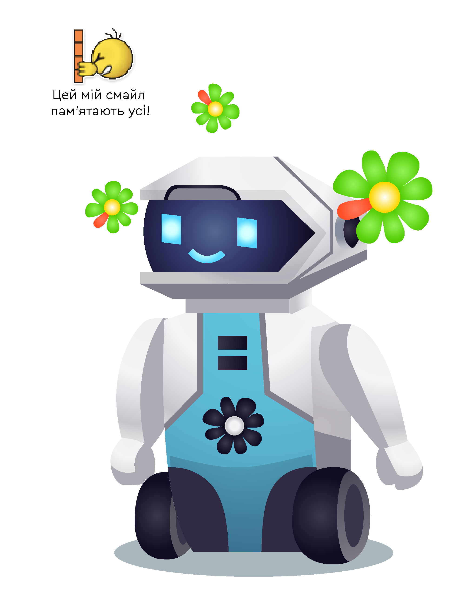
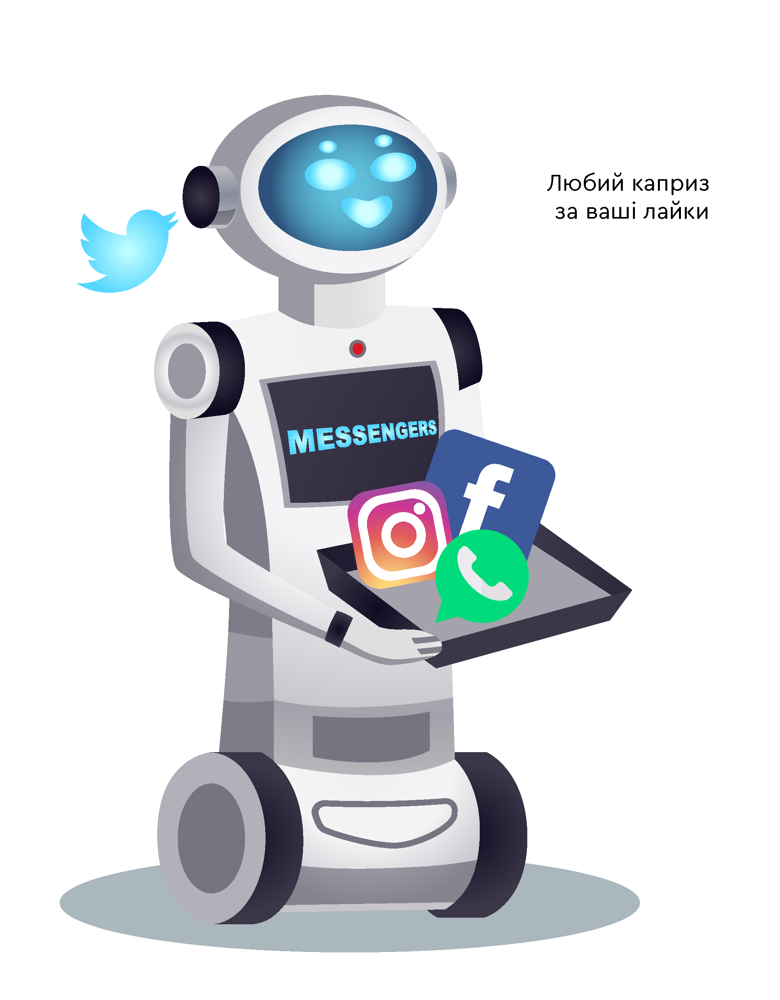

E-mail — прадід цифрового повідомлення
Цифрова комунікація повідомленнями розпочалася з електронної пошти. Перші електронні листи люди відправляли ще в 60х роках минулого століття, проте, як не дивно, зовсім не через Інтернет, якого ще тоді навіть не існувало, а в системі одного великого комп’ютера. За пару десятиліть технологія розвинулась, повідомлення почали подорожувати між віддаленими пристроями, а в 1987 році вперше Повідомлик відправився емейлом за кордон. Саме цього року був встановлений перший електронний поштовий зв’язок між Китаєм та Німеччиною.
З розвитком електронного листування з’явився спам. Справа в тому, що SPAM — це назва дешевих консервів, рекламу яких дуже активно розсилали електронною поштою ще на початках емейл-маркетингу. Реклама настільки набридла, що згодом спамом почали називати розсилку будь-яких оголошень.
«Напишу SMS, від землі до небес...»
І хоч в Україні любов по смс-ках скоріше є бабусею листувань по електронній пошті, насправді технологія SMS виникла суттєво пізніше. Перше смс-повідомлення було надіслане у Британії 1992 року з текстом “Merry Christmas”, а комерційною технологія стала у 1993. Напевне романтики в смс-листуванні додавала їхня головна особливість — обмеженість знаків. Смс-повідомлення складається з тексту довжиною до 140 байт і взагалі початково було призначене для коротких побутових звісток. Але щось пішло не так і в 2003 році через смс стало можливим навіть розлучення. Щоправда тільки в Малайзії.
Обмеженість символів спровокувала розвиток нової мови скорочень, такі слова як LOL і OMG були занесені в Оксфордський словник. А система T9 народила мільйони жартів та мемів.
MMS — забутий прогресом спосіб комунікації

Сьогодні від MMS відмовляються все більше операторів, але ми не можемо не згадати цілу епоху
мультимедійних повідомлень. Пік їхньої популярності припав на 2008-2010 роки, а головною перевагою перед Bluetooth та
ІК-портом було те, що пісні та картинки можна було відправляти на великі відстані. Ех, ці золоті часи Потапа
і Насті, блискучих картинок з котиками і постійних поповнень рахунку. MMS, ми сумуватимемо!
Проте невтішна доля цього виду повідомлень цілком виправдане явище. З розвитком та поширенням інтернету люди отримали
набагато ширші можливості передачі мультимедіа.
ICQ — не IQ!
Реєструючись у російській мережі Вконтактє, діти 1990-х та 2000-х в полі ICQ активно вписували “вище середнього” або “не нижче 100”. Вони просто не знали, що їх запитують не про інтелектуальні здібності, а лише про id-номер в найпопулярнішому месенджері 1998-2005 рр — ICQ. В пік популярності в ньому було зареєстровано 500 мільйонів користувачів, він успішно працював на ПК, не вимагаючи великої швидкості інтернету і навіть був доступний у мобільній версії.
Гучний ICQ, а на просторах колишнього СНГ — Аська, був швидким та зручним месенджером, який дозволяв людям знаходити миттєвих співрозмовників, друзів або навіть кохання з усього світу. На жаль, з приходом швидших та зручніших мобільних месенджерів, переважно десктопний ICQ не витримав конкуренції і за останні кілька років розгубив більшу частину своїх користувачів.
Facebook & co
Справжню революцію в світі електронного листування здійснили соціальні мережі. Вони перемістили процес спілкування з міжособистісної площини у публічну, таким чином утворивши абсолютно новий світ обміну цифровими повідомленнями. XXI століття — епоха створення соціальних мереж у сучасному розумінні цього слова. У 2004 році світ починає об’єднувати Фейсбук, у 2006 році повідомлення формуються на Twitter-платформі, у 2009 швидко обмінюються інформацією у WhatsApp, а у 2010 році стартує Інстаграм-додаток.
Важко переоцінити їх вплив на сучасну людину, вони знають про нас усе — від улюбленої страви до політичних поглядів. Завдяки ним Повідомлик тепер має зовсім іншу силу і він вже ніколи не буде таким, як був колись…
Скажи мені хто твій бот і я скажу хто ти
Чи хотіли б ви колись поспілкуватись з Тарасом Григоровичем Шевченком? Чи може ви ніяк не можете вловити момент, коли квитки на потрібний поїзд будуть у продажу і ще не розкуплені? Або вам просто хочеться почитати свій унікальний гороскоп. Тоді чат-боти стануть вам найкращими друзями. А якщо ви ще не встигли з ними навіть познайомитись, радимо не зволікати, бо кажуть, що до 2021 року 85% усіх операцій з клієнтами будуть здійснюватись з їхньою допомогою. Банки, сервіси доставки онлайн-замовлень та зв’язку — усі вони говорять з нами вустами коду та алгоритмів. І хто знає, добре це чи погано, але принаймні тепер ви завжди можете без докорів сумління замовляти надувний костюм динозавра о 2 ночі:) А наш Повідомлик стає повністю автоматизованим.
Комунікаційна {r}Еволюція не завершується і Повідомлик продовжує трансформовуватися у нові, швидкі та високотехнологічні способи передачі інформації. Можливо, вже сьогодні десь пишеться нова сторінка історії життя повідомлення. А комунікаційна {r}Eволюція приносить нам все нові виклики для спілкування.